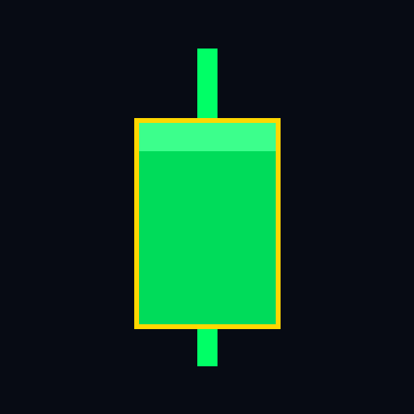

TIDELABS
Deck de inversores · Canarias
TIDElabs
«Si lo has soñado, podemos crearlo.»
Una casa creativa que construye productos con comunidad propia — y un estudio que factura para clientes mientras tanto.
La casa
Una casa, no una app
TIDElabs no es un producto: es el taller donde nacen. Tres marcas con público propio comparten equipo, tecnología y criterio — y el estudio de clientes pone la caja desde el primer día.

HUELLA GO
EN DESARROLLOEl juego que convierte caminar en jugar: territorio real, tribus y una cabra copiloto.

Aliseo.studio
EN VIVOCanciones personalizadas con productores reales. Vendiendo desde 25 €.

ALLINCRU · LEYENDAS
EN EL TALLERLaboratorio público de trading algorítmico: cada trade a la vista, ni un número inventado.
Producto 01
HUELLA GO — el territorio se juega caminando
Canarias convertida en tablero: rutas reales por GPS, conquistas, tribus y BAIFO, la cabra que comenta cada jugada. Ya probado en la calle, con rutas reales registradas desde teléfonos de usuarios.
10.000 × 499 €OBJETIVO declarado de la casa: negocios «lifetime» a 499 € ≈ 5 M€ de recorrido
44 paísescon negocios ya mapeados en la cosecha inicial del embudo comercial
Cifras de objetivo y de embudo interno, no resultados: HUELLA GO está en desarrollo.
Producto 02 · En vivo
Aliseo.studio — tu historia, hecha canción
Canciones personalizadas para bodas y grandes días, supervisadas por productores reales — no un generador automático. Web en vivo y recibiendo encargos, con garantía escrita: si la letra no emociona, se reescribe sin coste.
25 – 89 €tres niveles de encargo, desde la Esencial a la Premium
8 / mescapacidad real de producción: escasez honesta, agenda por orden de llegada
Producto 03
ALLINCRU — el laboratorio que no inventa
Estrategias legendarias de trading operando el oro (XAUUSD) en MetaTrader 5, en público: batallas, reputación y auditoría completa. Su ventaja no es una promesa — es una regla: lo que no es real, no se publica. En un sector podrido de humo, la transparencia es el producto.
En el taller: la flota se valida en el Strategy Tester antes de mostrar un solo resultado.
El motor
El estudio paga las facturas; los productos construyen el valor
- Clientes primero: la prioridad inmediata de la casa es la cartera de clientes — webs y productos a medida con el mismo sistema visual que ves en este deck.
- Un solo equipo: cada encargo de cliente afina la maquinaria que luego usan HUELLA, Aliseo y ALLINCRU.
- Distribución propia: comunidades vivas (LA CRU, el enjambre) antes que publicidad pagada.
La base
Canarias, con ventaja estructural
Casa canaria con vocación global desde el diseño. La ZEC permite tributar al 4 % en el Impuesto de Sociedades a quien cumple sus condiciones — 5 empleos en las islas capitalinas y 100.000 € de inversión en activos en Canarias — y la RIC permite reinvertir hasta el 90 % de la base. No es automática: es una ventaja preparada, con su ventana de autorización abierta hasta el 31-12-2026.
Verificado en la investigación registral y fiscal de la casa (octubre de 2026). La entidad se constituye con la inyección de capital, no antes: esa es la estructura acordada.
El momento
Por qué ahora
- Aliseo ya vende: producto en vivo, con precios, capacidad y garantía públicos.
- HUELLA ya camina: probado en calle por usuarios reales; la casa entera se presenta en un OS interactivo que ya es, en sí mismo, la demo.
- Conversación abierta: tras el Tenerife Accelera Fund, un fondo canario con ticket pre-seed de 50.000 € conoce la casa y su encaje está en estudio.
- La ventana fiscal: la autorización ZEC se pide antes de constituir — el calendario premia moverse en 2026.
La propuesta
Capital que enciende la casa
La inyección constituye la S.L. (capital social de 3.000 €) y financia, por este orden: protección de marca y constitución (≈650–1.100 € de tramitación verificada), equipo y lanzamiento de HUELLA GO, y colchón de estudio para cerrar clientes sin prisa mala.
3.000 €capital social de constitución (recomendado)
≈650–1.100 €constitución + marca acotada, ruta verificada
A cerrarla cifra de la ronda se define en conversación, con el plan sobre la mesa
Si lo has soñado, podemos crearlo
La mejor manera de juzgar la casa es usarla: nuestro escritorio interactivo — con sus juegos, su MSN y este mismo criterio — está en vivo.
Entrar en TIDElabs →
Aliseo.studio, en vivo: tidelabstech.github.io/Aliseo · HUELLA GO: huella-go.app · ALLINCRU: allincru.com
1 / 10